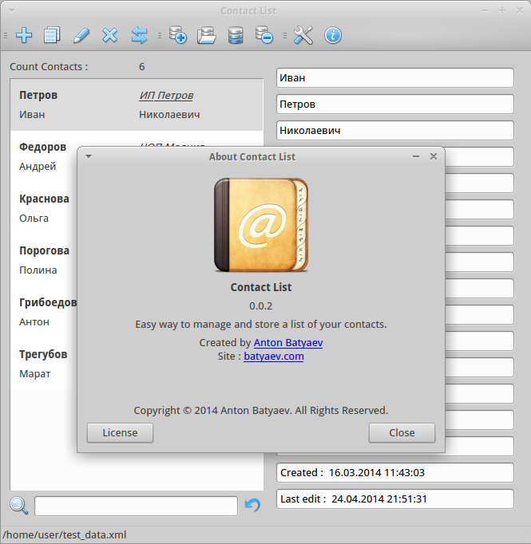
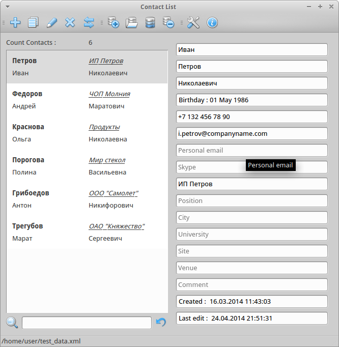
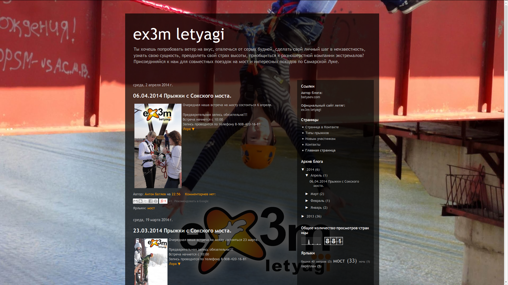
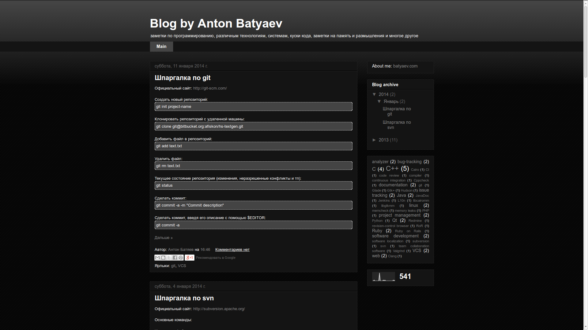

Personal Profile
I'm a software developer with experience of working on high-performance cross-platform network applications. I also worked with the embedded system based on ARM architecture. I have more than three years of experience in software development using C++ and Qt framework. I always do self-improvement and a lot of reading literature, paying particular attention to the technical literature . Example of the latest books I would like to mention the book Martin Fowler - Patterns of Enterprise Application Architecture from which I have learned many useful things.
Key Skills
- C / C++
- Java
- Qt
- Gtk+
- Shell
- design patterns
- network programming
- UML
- multithreading
- OOAD
- XML, XSLT, XSD
- SQL (Sqlite, MS SQL, FireBird, MySql)
- Doxygen
- VCS (Git, Subversion)
- Linux / Windows
Work Experience
Atol Group, Russia
C++ Software Developer
October 2012 – Present
- Development of cross-platform software specialized class Middle-office, occupying an intermediate position between Front-and Back-office and for operational management of objects of commercial enterprises.
- Optimization of server applications for speed and latency.
- Development of protocols for communicating with the handheld terminal with an integrated bar code laser scanner.
- Developing and maintaining a network between applications class front-office and middle-office.
- Development of GUI applications using Qt framework
- Development of server-side part of application to work with databases Firebird, MS SQL, Sqlite.
- Writing *. sh and *. bat scripts for continuous integration server. (build binary files, creating installers for different operating systems linux \ windows, etc.)
- Code Review to validate source code, written other employees, for the quality, correctness, and compliance with coding style docs.
"Dogma Samara" LLC, Russia
System administrator
May 2013 – August 2013
- Network management, small office (about 25 computers distributed between the four geographic locations in the two cities )
- Administration ftp , samba, dns and dhcp servers based on Windows Server 2007, 2003
- Remote control user computers based on the Linux operating system , configuring network printers, scanners .
- Control over the purchase of new equipment.
- Setting up a computer network office ( settings bridge over WiFi to a nearby building , analysis and formation of network card , configure remote access from a remote warehouse, etc. )
- Management of access rights to connect to the server (a common work of employees on the server via RDP protocol)
MTS (Mobile TeleSystems), Russia
Specialist of Call-center
July 2012 – October 2012
- Advising on cellular communication and mobile Internet
- Solution of problems and software problems with the network on mobile phones
- Providing information about the tariffs for mobile communication and services connected on telephone number.
Education
Volga State University of Telecommunications and Informatics, Russia
2010-2016, Master's Degree of information Security (5.5 years)
Department of information security of telecommunication networks
Personal
Date of birth
29 July 1993
Residence
Russia
Nationality
Russian
Languages
English, Russian
Software
Frontol Manager (in Atol company)
 |
 |
Frontol Manager - specialized software class Middle-office, occupying an intermediate position between Front- and Back- office and is designed for efficient management of existing retail businesses. Frontol Manager allows you to manage and administer the cash line , as well as equipment on the trading floor ( scales with label printing ) , control activities and carry out the transfer of data between all nodes in the system , and perform and record the transactions associated with the movement of material assets of the enterprise. And most importantly , FM consolidates information and automatically makes its bilateral exchange in sync between cash desks , back- office and equipment ( scales ) .
Contact List
|  |  |
This is open source application. I write for myself to manage a list of contacts, it is planned to extend the functionality of financial management and business, time management, integrated in the calendar (perhaps within individual applications)
Technologies used: C++, Qt, Xml, Csv, vCard format, SQLite, json, html, shell, Model/View Programming
GitHub repository:
Distrubution: Current_version (linux)
Web
ex3m-pro

This is a blog about the events of my friends - ex3m letiagi (Extreme flying squirrels) that are engaged in jumping from the bridge and forty meter tower. climb on an abandoned tower on the ice ax, fly on paroplane, go hiking in the mountains and caves. Simply put are quite Extreme lifestyle.
My blog

I created this blog to write to the notes on the various programs products, technologies, programming languages, some part of source code, and more.
My Сourses and Сertificates
Coursera.org (MOOC)
- Computer Science
by Nick Parlante ( Stanford University ) - Introduction to Databases (in progress)
by Jennifer Widom ( Stanford University ) - Cryptography I (in progress - second attempt)
by Dan Boneh ( Stanford University ) - Networked Life
by Michael Kearns ( University of Pennsylvania ) - Internet History, Technology, and Security
by Charles Severance ( University of Michigan ) - An Introduction to Interactive Programming in Python (in progress)
by Joe Warren, Scott Rixner, John Greiner, Stephen Wong ( Rice University )
D-Link
- Hardware firewalls from company D-link. Network security, VPN technology
- Build networks based on managed switches D-Link 2nd and 3rd level. Part 2: Configuring hardware
- Construction of video surveillance systems on the D-Link equipment
- Construction of the wireless Wi-Fi networks on the D-Link equipment
Dr.Web
-
For certified users:
- DWCERT-030-11 «Antivirus Dr.Web» Business
- DWCERT-030-3 «Dr.Web for Mac OS X»
- DWCERT-030-5 «Dr.Web LiveCD (Dr.Web LiveUSB)»
- DWCERT-030-10 "Service «Antivirus Dr.Web» for home"
- DWCERT-030-6 "Dr.Web CureIt!"
-
For system administrators:
- DWCERT-004 Dr.Web AV-Desk Internet Service
- DWCERT-002 Dr.Web Enterprise Security Suite
- DWCERT-001 Dr.Web® for Windows
Cisco Networking Academy
- CCNA Discovery 1: Networking for Home and Small Businesses
- CCNA Discovery 2: Working at a Small-to-Medium Business or ISP
- CCNA Discovery 3: Introducing Routing and Switching in the Enterprise
MTS (Mobile TeleSystems)
- Overview of the technology 4G (LTE)